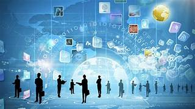
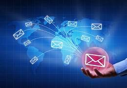
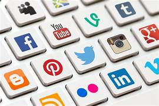

Marketing design applies graphic design principles to the ultimate goals of a marketing effort. It encompasses both the creation of a recognizable visual identity that will appeal to potential customers and the marketing team’s deployment of that identity in the form of internally consistent assets. Marketing design is an essential piece of a business’s marketing strategy since good design is one of the primary ways to grab your target audience’s attention. The marketing graphics that a design team creates are also vital to a positive user experience since welcoming visuals will make customers more likely to return.
Many might argue marketing has been around for as long as commerce because people needed a way to sell their goods. However, marketing can be tied back to the printing press and the first magazines. From there came other types of print advertising, including billboards. However, marketing has evolved along with technology.
Digital marketing is a form of marketing that leverages the internet and digital technologies, such as computers and smartphones, to connect with customers. More than running a sponsored Instagram ad to drive sales, it's a set of practices that interacts with customers at every stage of the buying journey.
Digital marketing includes email, social media, advertising, and multimedia messaging that is distributed through mobile and web. Over 60 percent of the global population is online, and more people are joining them every day. That's why companies are now increasing their digital marketing budgets by double-digit figures while traditional marketing gets slashed

Digital marketers connect with potential customers through different channels. The following digital marketing tactics, used by small companies and big businesses alike, remain among the most popular and impactful used today.
Search engine optimization (SEO) is a technique that seeks to improve the ranking of online material on search engines such as Google or Bing. If you have ever searched for something on Google, you’ve likely noticed that even the simplest search can yield millions of results. Yet, you probably rarely go past the first few suggestions, let alone the next page.
In such a highly crowded space, digital marketers use SEO to ensure that potential customers actually find their products or services online. Some common ways to go about SEO include:
Creating quality content that meets searcher intent
Using keywords to help search engines identify relevant material.
Content marketing connects with target audiences through original content, such as blogs, articles, and newsletters. It is often used to raise brand awareness through material that appeals to a particular audience. Content marketing can take many forms across a range of digital media channels, including: Informative articles and blogs, Original videos, Podcasts , Newsletters (like Substack, Medium, or LinkedIn)
arketers send out timely emails to large groups of people who have signed up for their contact list to inform potential customers of sales, discounts, and product launches. The impact of email marketing is clear: When used strategically, it can have an average return on investment (ROI) of 4,200 percent for every dollar invested [4]. Some common examples of emailing marketing include: Timed emails that raise brand awareness during holiday seasons, Blast emails that inform recipients about upcoming sales events .
Social media marketing is a form of digital marketing that uses social networks such as Twitter, Instagram, Facebook, and TikTok, to reach customers. It leverages the reach of social network platforms with data-driven efforts to reach targeted consumers. Whether through computers, mobile devices, or mobile apps, social media offers the opportunity to reach a wide—and targeted—audience of possible consumers. Examples of social media marketing include: Videos posted onto social media as a part of a larger campaign, such as this 80s-themed music video produced by peanut company Planters for the holidays Pictures posted on Instagram that reflect a brand’s identity, such as Patagonia’s nature-filled Instagram account .
